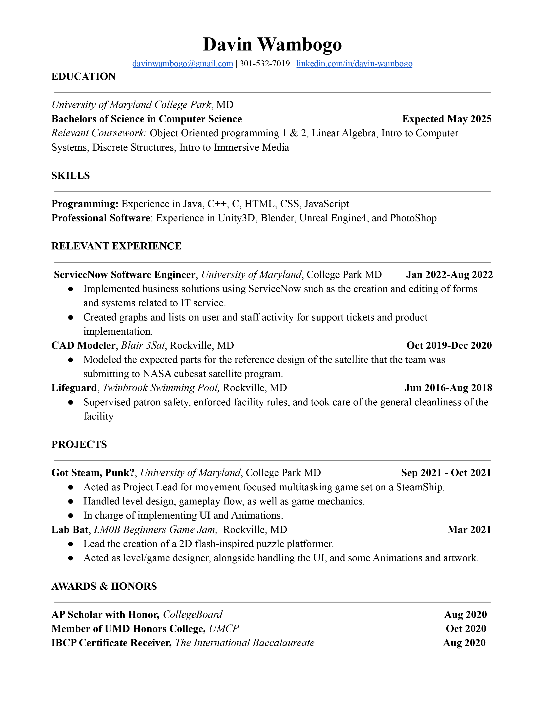

Davin Wambogo
Student | Game Designer / Front-End Developer
Hi, I'm Davin Wambogo, Nice to meet You!
I've always been fascinated by the way technology can enhance life, be it through making life easier or more exciting. I've collaborated with others to create various digital products in the form of games and apps, with the goal of creating unique experiences that are accessible to as many people as possible. I'm a problem solver, a quick learner and working on improving myself one step at a time.

Counter Tempo Studios
At the start of the pandemic, I brought together a group of trusted friends to make games. We're called Counter Tempo Studios. It was a name chosen to represent the kind of games we wanted to make. One's that were unqiue and different from industry direction. One of those differences being a focus on accessiblity.
Featured Projects
Got Steam, Punk?
Acted as Project Lead for movement focused multitasking game set on a SteamShip. I handled level design gameplay flow, as well as game mechanics. I was also in charge of implementing UI and Animations. In Got Steam, Punk? you are crew member of the world most advanced stemship because it's first and only steam ship. You go around the ship at the captains orders fixing parts of the ship as it crumbles around you.
View projectGhosts Can't Go On Dates
Created the environment for a comedic genre fusing of dating and multitasking games. In Ghosts Can't Go On Dates you are a ghost going on a date with the girl of your dreams. However, she doesn't know your ghost and you can't let her. Throughout the game you manage eating, breathing and drinking on your dinner date, at rates as normal possible to an live human to keep her suspiscion of you down.
View projectLab Bat
Lead a team of 7 to make a 2D flash-inspired puzzle platformer for a gamejam over five days. I
personally
Designed the levels and mechanics. As well as handled UI, Animations and other art work. In Lab
Bat you
are one of the test bats from World War 2 which Whether being trained on how to drop bombs. The goal of
the game is to prove your capablities by solving increasingly complex puzzles with your unique abilites
as a bat to glide and cling to cielings
Game
Designer
I want to bring to life new and interesting worlds that no one has ever seen before
Languages
C++, Java, C
Software Experience
- Unity3D
- Unreal Engine 4
- Blender3D
- Adobe Photoshop
Front-End
Developer
I want to make content that is as accessible as possible to as many people as possible
Languages
HTML, CSS, JavaScript
Frameworks
- React.js
Education
University of Maryland - College Park
Undergraduate Studies in Computer Science, Started September of 2021
